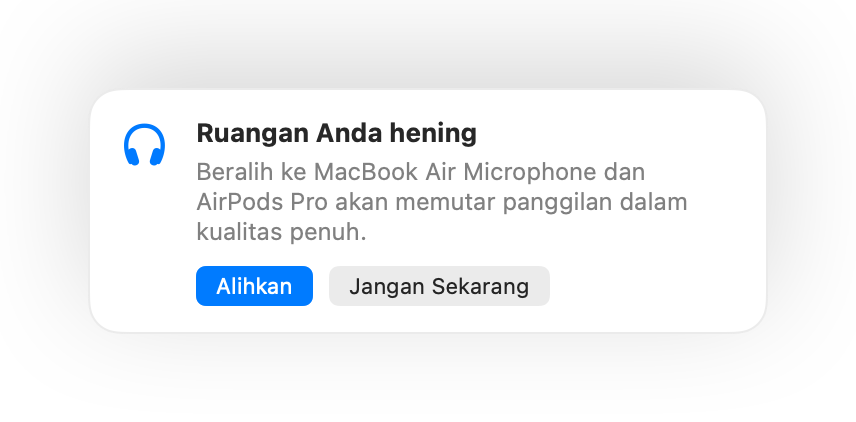

Mengapa suara AirPods terdengar lebih buruk saat panggilan di Mac
Masuk ke panggilan dengan AirPods dan tiba-tiba suaranya terdengar cempreng dan teredam. Ini bukan kerusakan. Saat sebuah app menggunakan mikrofon AirPods, Bluetooth mengalihkan AirPods ke mode panggilan yang memutar audio dalam kualitas jauh lebih rendah.
Solusinya adalah berbicara melalui mikrofon Mac Anda dan membiarkan AirPods hanya memutar suara. Di ruangan yang hening, mikrofon Mac Anda terdengar sama bagusnya, dan panggilan kembali diputar dalam kualitas penuh. Muffle mendeteksi saat ruangan Anda hening dan menyarankan pengalihan.
Pertahankan kualitas penuh saat panggilan
- Instal Muffle dan biarkan “Sarankan mikrofon terbaik untuk ruangan” tetap aktif.
- Bergabunglah ke panggilan Anda menggunakan AirPods seperti biasa.
- Saat Muffle memberitahukan ruangan Anda hening, klik Alihkan.
- Jika situasi menjadi bising nantinya, Muffle akan menyarankan mikrofon AirPods lagi.

- Pengalihan ini berfungsi jika app panggilan Anda menggunakan mikrofon default sistem. Di Google Meet, Zoom, dan Teams, pilih opsi default atau sama dengan sistem.
- Tetaplah berada di dekat Mac saat menggunakan mikrofonnya. Muffle hanya menyarankannya jika mikrofon dapat mendengar Anda dengan jelas.
Pertanyaan umum
Mengapa suara AirPods buruk saat panggilan di Mac?
Bluetooth tidak dapat mengirim stereo berkualitas tinggi dan suara Anda secara bersamaan, sehingga AirPods beralih ke mode panggilan saat mikrofonnya sedang digunakan.
Apakah Muffle mengalihkan mikrofon secara otomatis?
Tidak. Muffle hanya menyarankan mikrofon yang lebih baik. Tidak ada yang berubah sampai Anda mengeklik Alihkan.